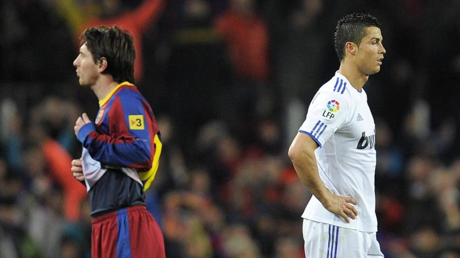
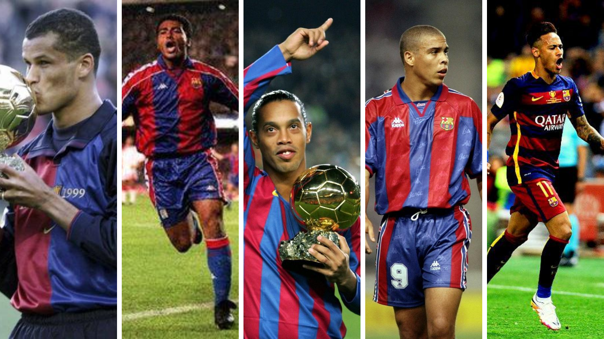

História do FC Barcelona
Última atualização 01 de Dezembro 2020Atualmente com 121 anos de história, de muitas glórias e alguns momentos conturbados, o Fútbol Club Barcelona superou barreiras e expectativas até se tornar o grande clube que conhecemos hoje, foi criado em 29 de novembro de 1899 por um grupo de doze torcedores de futebol, comandados pelo suíço Hans Gamper, diante um anúncio publicado na revista Los Deportes em 22 de outubro do mesmo ano. Entre os doze fundadores do clube havia seis espanhóis, três ingleses, dois suíços e um alemão. O nome original escolhido foi "Football Club Barcelona", O principal objetivo do clube era ser democráticamente e socialmente inclusivo, ou seja, as pessoas podiam sugerir ideias e participar do desenvolvimento do clube.

Primeiras décadas
Somente no final de sua primeira década o clube conseguiu seus primeiros títulos, uma Copa do Rei e uma Copa dos Pirineus. Ao decorrer dos anos 1910 o clube deu um grande avanço, tanto esportivo como social: ganhando duas Copas da Espanha e três Copas dos Pirineus, e chegou a marca dos 3 000 associados, considerando-se já em uma das sociedades mais populares da Catalunha. Nesses anos foi quando se popularizou o apelido de "culés" referente aos torcedores do clube. A equipe jogava suas partidas no Camp del Carrer Indústria, que enchia totalmente quando jogava o Barcelona, e desde a rua se via como estavam sentados, de costas, os torcedores localizados na parte mais alta da arquibancada. A Imagem desde a rua era a de uma grande quantidade de traseiros (culos), por esta razão, aos torcedores do Barcelona se começou a chamar "culés". Dessa década também cabe citar que, em 1914, o clube criou sua primeira seção poliesportiva, a de atletismo. Os anos 1920 passaram à história como a primeira época dourada do clube. Passou de 3 000 a 11 000 sócios e, em 1922, estreou o primeiro grande estádio do Clube, o Camp de Les Corts, com capacidade para 30 000 espectadores. Foram anos nos quais o clube ganhou quatro Copas da Espanha e, em 1929, a primeira Liga espanhola da história. Também cabe citar os incidentes acontecidos em 1925 quando o governo da ditadura de Primo de Rivera fechou o estádio de Les Corts durante seis meses e obrigou a demitir o presidente Hans Gamper por causa dos assobios com os que a torcida barcelonesa recebeu a interpretação da Marcha Real antes do inicio de uma partida. Dessa década cabe destacar que o clube avançou na linha de ampliar seu caráter poliesportivo, e criou as seções de hockey sobre grama, basquete e rugby. O anos 1930 foram de grandes crises para o clube. Se iniciou a década com o suicídio de Hans Gamper, provavelmente devido à catastrófica situação econômica na que se entrou após o Crack da Bolsa de Nova Iorque em 1929. Posteriormente, com o advento da Segunda República se produziu um descenso do número de sócios que se agravou com o início da Guerra Civil espanhola em 1936. Nesse ano, além disso, o presidente do clube Josep Sunyol, que era político da Esquerra Republicana de Catalunya, foi assassinado pelas tropas franquistas em uma emboscada na Sierra de Guadarrama. o clube acabou na década com tão somente 2 500 sócios.
pt.wikipedia.org/wiki/História_do_Futbol_Club_BarcelonaÚltimas décadas
A partir da década de 1990, iniciou-se o melhor momento de sua história,foram dez anos de sucesso para o clube, em todas as partes, tanto no aspecto futebolístico quanto nas seções esportivas. A equipe de futebol, treinada por Johan Cruyff, e com figuras como Koeman, Guardiola, Stoichkov, Romário, Laudrup, Zubizarreta ou Bakero ganhou quatro Ligas consecutivas entre 1991 e 1994, e o 20 de maio de 1992 conquistou o título mais apreciado do clube: a Copa de Europa, no estádio de Wembley, diante do Sampdoria italiano. Durante estes anos, o equipe desempenhou um grande jogo e foi conhecido popularmente com o nome de Dream Team. No início de 2003, inicia-se um período vitorioso do Barcelona na Europa,após a chegada de Ronaldinho em Barcelona vindo do Paris Saint-Germain. Logo em seguida surge a era Lionel Messi e Pep Guardiola.
Era Cruyff
Após décadas nunca conquistou reconhecimento, Cruyff faz o Barcelona começar a trilhar o caminho do sucesso.
Era Ronaldinho
Um Barça que estava desorganizado, volta a brilhar e ter esperanças com Ronaldinho.
Era Pep Guardiola
O grande ápice de sua história, com domínio total na Europa, e surgimento de grandes estrelas.
Rivalidade: Barcelona x Real Madrid
Barcelona e Real Madrid é de longe um dos maiores e mais disputados clássicos do futebol mundial, além de ser um clássico muito forte pelo poder do futebol, a briga política entre Catalunha x Madrid deixa ainda mais quente o jogo. Nos últimos anos, a qualidade técnica do “El Clásico” se elevou muito e o transformou no jogo mais assistido do mundo, oque ampliou muito a rivalidade entre os dois gigantes da Espanha.
Atualmente, o fato sobre a independência da Catalunha é muito discutido na Espanha, mesmo que indiretamente, o Barcelona sempre foi forte símbolo pela luta do povo catalão para essa conquista. Enquanto isso, o Real Madrid se fortalecia ainda mais como um clube da capital espanhol. Essa simbologia já vem antes da Guerra Civil espanhola, o clube da capital possuía somente dois títulos nacionais. Foi durante o governo do general Franco que o Madrid se tornou a potência que conhecemos hoje. Não poderia passar por coincidênci disso, relatos da época, afirmam que o ditador quis utilizar o crescimento do clube como uma forma de iteração da capital, principalmente por conta dos dois grandes clubes espanhóis da época serem o próprio Barcelona e o Athletic Bilbao (clubes que representavam a Catalunha e o País Basco).
No histórico do confronto, ambas equipes estão equilibradas no Campeonato Espanhol, com 72 vitórias culés e 73 merengues.
Alguns Craques brasileiros
Pelo histórico, Barcelonona é um lugar que muitos brasileiros atuaram e fizeram história, cativando a torcida com um futebol alegre e envolvente, inegavelemente, a partir dos anos 90 o Barcelona passou a conquistar seus principais títulos, muito devido a grandes craques brasileiros como Romario, Ronaldo, Ronaldinho, Rivaldo, Belleti, Neymar, Daniel Alves, entre outros craques carregam grandes histórias no clube. O começo da década marcou o retorno de Cruyff, dessa vez como treinador. O marco dos anos 90 foram as quatro conquistas seguidas da La Liga, de 90 a 94. Desse modo, em 1999 eram comemorados os 100 anos do clube que lutou tanto para ser reconhecido, atualmente o clube conta com três brasileiros no elenco o goleiro Neto e os meias Philipe Coutinho e Matheus Fernandes.